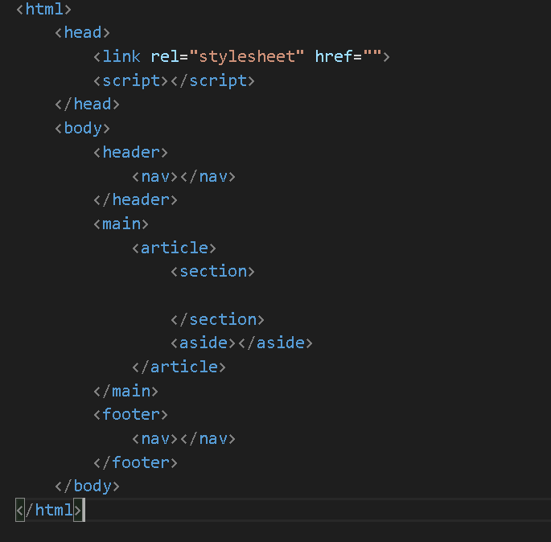

ЧТО ТАКОЕ HTML?
HTML (Hypertext Markup Language) - это код, который используется для структурирования и отображения
веб-страницы и её контента. Например, контент может быть структурирован внутри множества параграфов,
маркированных списков или с использованием изображений и таблиц данных. Как видно из названия,
эта статья даст вам базовое понимание HTML и его функций.
Что это на самом деле?
HTML не является языком программирования; это язык разметки, и используется,
чтобы сообщать вашему браузеру, как отображать веб-страницы, которые вы посещаете.
Он может быть сложным или простым, в зависимости от того, как хочет веб-дизайнер.
HTML состоит из ряда элементов, которые вы используете, чтобы вкладывать или оборачивать
различные части контента, чтобы заставить контент отображаться или действовать определённым образом.
Ограждающие теги могут сделать слово или изображение ссылкой на что-то ещё,
могут сделать слова курсивом, сделать шрифт больше или меньше и так далее.
Атрибуты
Атрибуты содержат дополнительную информацию об элементе, которую вы не хотите показывать в
фактическом контенте. Например существует атрибут "class".
Класс позволяет дать элементу идентификационное имя, которое может позже использоваться,
чтобы обращаться к элементу с информацией о стиле и прочих вещах.
Атрибут всегда должен иметь:
- Пробел между ним и именем элемента (или предыдущим атрибутом, если элемент
уже имеет один или несколько атрибутов).
- Имя атрибута, за которым следует знак равенства.
- Значение атрибута, заключённое с двух сторон в кавычки.
Вложенные элементы
Вы также можете располагать элементы внутри других элементов — это называется вложением.
Если мы хотим заявить, что наша кошка очень раздражена, мы можем заключить слово "очень" в
элемент "i" , который указывает, что слово должно выводиться курсивным начертанием:
Здравствуйте, меня зовут Лёха.
Элементы должны открываться и закрываться правильно, поэтому они явно располагаются
внутри или снаружи друг друга. Если они перекрываются,
ваш веб-браузер будет пытаться сделать наилучшее предположение на основе того,
что вы пытались сказать, что может привести к неожиданным результатам.
Так что не стоит этого делать!
Теги блочного уровня
Три тега уровня блока, которые каждый HTML-документ должен содержать: "html", "head" и "body".
- Тег html — это элемент самого высокого уровня, который охватывает каждую HTML-страницу.
- Тег head содержит метаинформацию, такую как заголовок страницы и кодировка.
- Наконец, тег body содержит всё содержимое, отображаемое на странице.

Чем отличается HTML от HTML5?
Начиная с первых дней, HTML прошёл невероятную эволюцию. W3C постоянно публикует
новые версии и обновления, в то время как исторические вехи также получают выделенные имена.
HTML4 (в наши дни обычно называемый «HTML») был опубликован в 1999 году, а последняя
крупная версия вышла в 2014 году. HTML5 — это обновление, которое ввело множество новых функций для языка.
Одной из наиболее ожидаемых особенностей HTML5 является поддержка встраивания аудио и видео.
Вместо использования Flash-плеера мы можем просто вставлять видео и аудио-файлы
на наши веб-страницы с помощью новых тегов "audio" и "video". Он также включает встроенную
поддержку масштабируемой векторной графики (SVG) и MathML для математических и научных формул.
HTML5 также ввёл несколько семантических улучшений. Новые семантические теги информируют браузеры о значении
контента, что приносит пользу как читателям, так и поисковым системам.
Наиболее популярными семантическими тегами являются "article", "section", "aside", "header" и "footer".